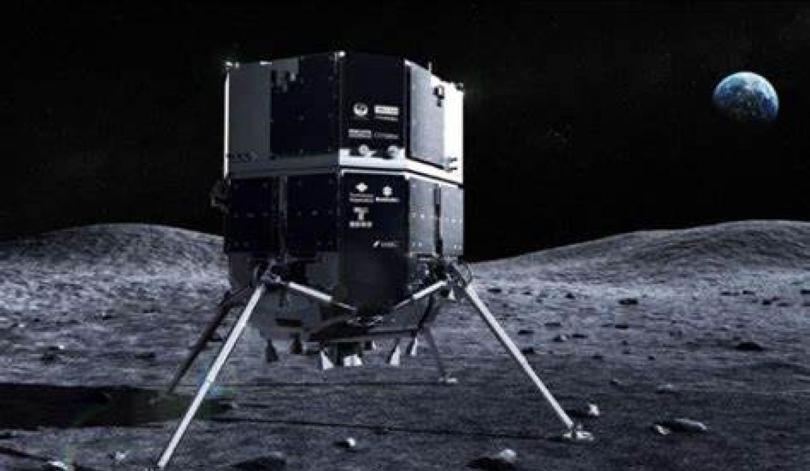

28
21
24 de abril de 2023
Por Fidel Forato | 5min de leitura
O Japão está perto de se tornar a quarta nação a pisar (não literalmente) na Lua nesta terça-feira
(25). A missão não-tripulada da ispace, que também pode ser a primeira sonda privada a pousar
no satélite natural, está com a alunissagem marcada para às 13h40 (horário de Brasília).
- China, Estados Unidos e Rússia já mandaram sondas para à Lua;
- Em todos esses casos, o lançamento foi de responsabilidade de uma agência espacial estatal;
- No caso do Japão, essa pode ser a primeira vez que uma sonda privada é mandada para o
satélite natural; - Mas não é a primeira tentativa, já que em 2019 o módulo israelense Beresheet pegou carona
em um Falcon 9, da SpaceX, mas foi destruído ao colidir com o solo lunar;
Hokuto-R, a primeira sonda privada na Lua

A sonda japonesa recebeu o nome de Hokuto-R e conta com mais de 2 metros de altura. Totalmente abastecido, o módulo pesa mais de uma tonelada.
De forma geral, o esqueleto do mineiro estava praticamente completo, só que faltavam
partes do crânio que formavam a face. A vantagem dos pesquisadores é que o lado
esquerdo do rosto estava intacto, possibilitando o uso de uma técnica, a aproximação
facial forense, que espelhou o lado conhecido e permitiu a reconstrução do direito —
em sua maior parte, era desconhecido.
Para aperfeiçoar o processo, também foi usado um software, o que resultou em “dados
mais robustos sobre o tamanho dos lábios e do nariz", apontam os cientistas. No final
desta etapa, a dupla desenvolveu um modelo "mais objetivo e científico" daquele
homem, em tons de cinza, com olhos fechados e sem nenhum tipo de pelo, como é
possível observar a seguir:
Lançado em 11 de dezembro do ano passado a bordo
de um Falcon 9 da SpaceX, o módulo está fazendo
uma rota um pouco mais longa, mas econômica em
termos de combustível, para chegar à Lua.
- Dentro do módulo, está presente um rover construído pelos Emirados Árabes
Unidos, o Rashid, que tem dez quilos; - Além dele, um outro rover japonês, em forma de esfera e pesando apenas 250
gramas vai ser liberado no solo lunar; - Caso ocorra algum contratempo, a ispace já divulgou outras três datas para tentar
pousar: 26 de abril, 1 de maio e 3 de maio de 2023; - Até o momento, segundo a atualização mais recente, tudo caminha para um pouso
bem-sucedido na Lua.